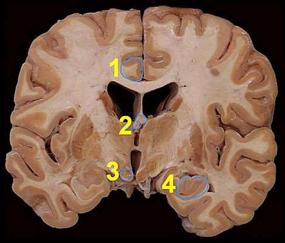
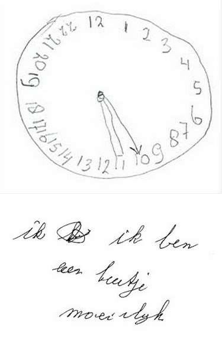
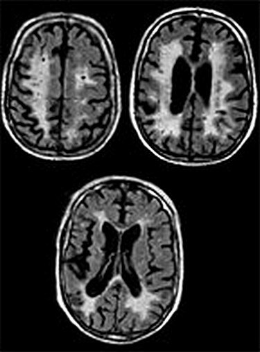
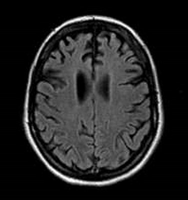
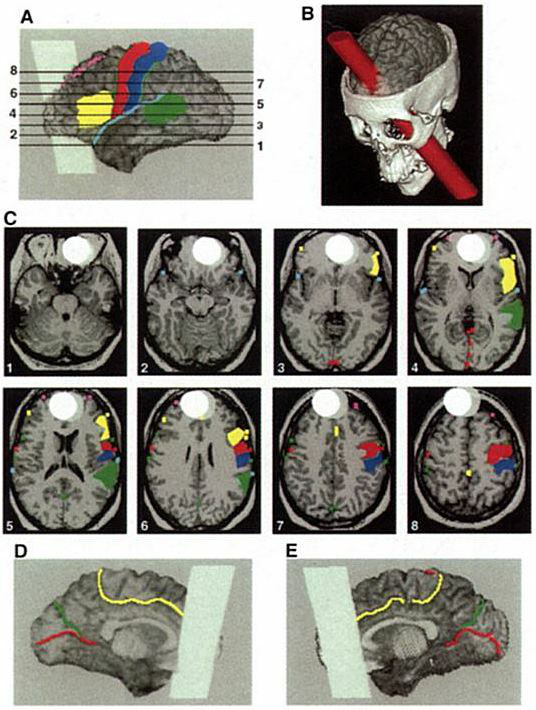
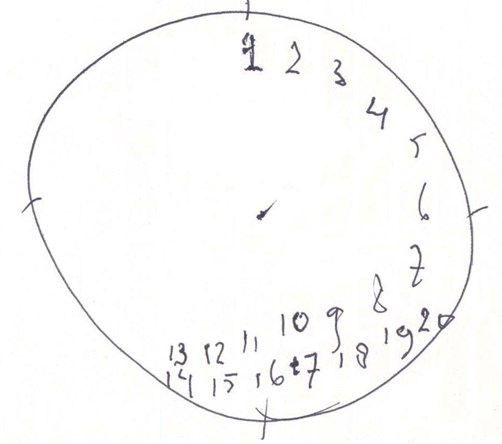

Menu
Psychisch functioneren en CognitieOefentoets Neurocognitie & Hersenen
Examen inleveren
Weet je zeker dat je het examen afsluit?
Examen resetten
Al je antwoorden worden gewist en je begint opnieuw. Weet je het zeker?
Jouw resultaten
Psychisch functioneren en Cognitie · Oefentoets Neurocognitie & Hersenen
—
/ 40
0
Goed
0
Fout
0
Niet beantwoord
Vraag 1
Casus 1
Meneer P., 80 jaar, voormalig architect, bezoekt op verzoek van zijn huisarts de geheugenpoli wegens vergeetachtigheid. In de anamnese bevestigt hij kleine alledaagse dingen te vergeten; hij ondervindt hier zelf weinig hinder van en denkt dat het bij de leeftijd hoort. Zijn echtgenote vertelt dat hij sinds 2 jaar steekjes laat vallen: hij herinnert recente gebeurtenissen minder goed en vraagt soms dingen dubbel. Vroeger had hij meestal het hoogste woord, nu zit hij afwezig bij gezelschap en neemt hij geen initiatief meer (bijv. bij een kapotte vaatwasser, of terugvinden van zijn auto in de parkeergarage). Voorgeschiedenis: hypertensie (waarvoor antihypertensiva) en een liesbreukoperatie. Bij het cognitief neurologisch onderzoek is de MMSE 25/30, met puntenverlies op de oriëntatie en recall.
Welke uitspraak is juist over de syndroom diagnose?
Vraag 2
Casus 1 (vervolg) — dezelfde meneer P., 80 jaar, met de geheugenklachten, afgenomen initiatief en MMSE 25/30.
Welke uitspraak is juist over de etiologische diagnose?
Vraag 3
U ziet in de huisartsenpraktijk de heer W., 85 jaar, die ten gevolge van een urineweginfectie met tekenen van weefselinvasie een delier heeft ontwikkeld. Naast voorlichting en niet-medicamenteuze adviezen start u ook met een medicamenteuze behandeling.
Welk geneesmiddel(groep) zou u willen voorschrijven voor het behandelen van de oorzaak van het delier?
Vraag 4
De dichtheid van de dopamine D1- en D2-receptoren is het hoogst in:
Vraag 5

Welke omlijnde structuren behorende tot het limbisch systeem zijn aangegeven in bovenstaande figuur? Kies bij elk nummer de juiste structuur.
Sleep een optie naar de bijbehorende rij, of tik eerst op een kaart en dan op een rij.
Nummer 1
Sleep hier naartoe
Nummer 2
Sleep hier naartoe
Nummer 3
Sleep hier naartoe
Nummer 4
Sleep hier naartoe
Vraag 6
De heer Z., 72 jaar, is opgenomen op de IC na een coronary artery bypass graft (CABG). Voorgeschiedenis: een CVA op 59-jarige leeftijd met een hemiplegiebeeld, waarvan hij in de loop der jaren goed is opgeknapt. Na de CABG start hij i.v.m. een delier met 2 mg haloperidol. Twee dagen later ligt hij roerloos in bed zonder met zijn ogen te knipperen; als u zijn hand probeert te schudden trekt hij deze onverwacht terug, en u ziet dat zijn hoofd 2-3 cm boven het kussen zweeft.
Van welk psychiatrisch symptoom/syndroom is hier sprake? Geef per begrip aan of het juist of onjuist is.
katalepsie
kataplexie
katatonie
Vraag 7
Vervolg casus mevrouw D. (85 jaar, ziekte van Parkinson en dementie, delier op de afdeling).
Welk antipsychoticum is relatief gecontra-indiceerd bij mevrouw D.?
Vraag 8
Welk symptoom / welke symptomen worden in het psychiatrisch onderzoek ondergebracht bij de affectieve functies? Er zijn meerdere antwoorden mogelijk.
Meerdere antwoorden mogelijk.
Vraag 9
Dhr W., 48 jaar, komt bij een psychiater met de klacht dat hij last heeft van spanningen die hem ernstig belemmeren bij zijn dagelijkse activiteiten. Hij heeft voortdurend zorgen of hij zijn baan wel behoudt, over zijn gezondheid, over het opvoeden van de kinderen en het op tijd zijn voor afspraken. Hij heeft het gevoel “gek” te worden. De psychiater vraagt zich af of cognitieve gedragstherapie een mogelijke behandeloptie is, en besluit een G-schema te toetsen.
“Ik heb het gevoel gek te worden” valt onder de G van
Vraag 10
Een 61-jarige vrouw wordt opgenomen op de afdeling interne geneeskunde vanwege een urineweginfectie. Zij is bekend met een frontotemporale dementie. Op de afdeling is zij ontremd, gedesoriënteerd in tijd en plaats, en onrustig. Zij maakt een ritmisch wiegende beweging waarbij zij steeds haar oor en knie aantikt. De verpleegkundige vertelt dat de symptomen wisselen in de loop van de dag. Welk klinisch gegeven levert de belangrijkste aanwijzing dat er, naast de dementie, ook sprake is van een delier?
Vraag 11
De hoogste dichtheid van dopaminerge vezels wordt aangetroffen in
Vraag 12
Een 75-jarige vrouw komt bij de huisarts in verband met toenemende vergeetachtigheid. Zij kan niet meer goed voor zichzelf zorgen en raakt de weg kwijt. De huisarts besluit om een MRI van het brein te laten maken, waarop hippocampusatrofie wordt gezien. Welke diagnose is het meest waarschijnlijk op basis van deze gegevens?
Vraag 13
Hoe vaak komen subjectieve problemen met het autobiografisch geheugen voor na ECT?
Vraag 14
Vervolg casus heer H.
U praat verder met de heer H. Af en toe stopt hij midden in een zin, zonder deze verder af te maken. U kunt hem moeilijk volgen in zijn redeneertrant. Waar schrijft u deze bevinding op in het psychiatrisch onderzoek?
Vraag 15
Welke behandelinterventies zijn zinvol bij de behandeling of preventie van suïcidaal gedrag?
Vraag 16
Welke symptomen worden in het psychiatrisch onderzoek ondergebracht bij de cognitieve functies? (Twee antwoorden zijn correct.)
Meerdere antwoorden mogelijk.
Vraag 17
Waar vandaan ontvangt de noradrenerge locus coeruleus zijn belangrijkste afferenten?
Vraag 18
Welke uitspraak over een delier is juist?
Vraag 19
Casus 4 (vraag 49 en 50) Als zaalarts urologie wordt u in de avonddienst geroepen bij mevrouw K. (70 jaar), bekend met de ziekte van Alzheimer. Zij is opgenomen in verband met een nieroperatie. De verpleging vindt haar teruggetrokken en stil en zij beweegt traag. Bij screenend lichamelijk en laboratoriumonderzoek bij opname werden er geen afwijkingen gevonden. U liep zojuist bij patiënte langs en zag dat deze alert reageerde.
Wat is nu het aangewezen beleid?
Vraag 20
Casus 4 (vraag 49 en 50) Mevrouw K. (70 jaar), bekend met de ziekte van Alzheimer, is opgenomen in verband met een nieroperatie.
Het is 22.00 uur. Mevrouw K. vertelt u dat zij zich goed voelt en dat ze niet bezorgd is over morgen. Vanmiddag waren haar kleinkinderen nog op bezoek en haar buurvrouw was langs geweest om de planten water te geven.
Waarvoor heb je nu in ieder geval geen bewijs?
Vraag 21
Een 65-jarige lerares uit het basisonderwijs is onderzocht op de geheugenpolikliniek in verband met zorgwekkende klachten van vergeetachtigheid. Tijdens het neuropsychologisch onderzoek tekent zij de klok (bovenste afbeelding) en schrijft zij tijdens de afname van de MMSE de zin (onderste afbeelding).
Wat is de beste interpretatie van deze testen in het kader van het onderzoek van de cognitieve functies?

Vraag 22
Welke bewering over fronto-temporale dementie (FTD) is NIET juist?
Vraag 23
Bij welke vorm van dementie zijn mono-genetische oorzaken het meest voorkomend?
Vraag 24
In welke mate hebben patiënten tijdens ECT in het algemeen last van cognitieve bijwerkingen?
Vraag 25
Een 59-jarige man bezoekt de geheugenpolikliniek. Zelf heeft hij geen klachten, maar zijn vrouw benoemt verontrustende vergeetachtigheid en gedragsveranderingen: hij vergeet bijvoorbeeld de vuilniszak buiten te zetten; hij kan de boodschappen niet onthouden, waardoor hij met te weinig spullen thuiskomt; en hij is stiller in gezelschap, neemt vrijwel geen initiatief meer. De MRI-scan tijdens het diagnostisch traject laat het volgende beeld zien:
Wat is de meest waarschijnlijke diagnose bij meneer?

Vraag 26
Welke bewering over biomarkers is NIET juist?
Vraag 27
Wat is de meest voorkomende bijwerking van rTMS?
Vraag 28
Een 59-jarige man bezoekt de geheugenpolikliniek. Hij heeft zelf geen klachten, maar zijn vrouw noemt vergeetachtigheid, woordvindproblemen en gedragsverandering (vreemden aanspreken op straat) als belangrijkste klachten. De MRI-scan tijdens de diagnostische fase laat het bovenstaande beeld zien. De meest waarschijnlijke diagnose is nu:

Vraag 29
Sem (8 jaar) heeft moeite om op school zijn aandacht bij de les te houden. Hij is al vooraan in de klas gezet met koptelefoon, maar hoort toch alles wat achter hem gebeurt. Hij is ook overgevoelig voor andere geluiden. Als zijn moeder gaat stofzuigen, doet hij zijn handen voor zijn oren. Hij raakt in paniek wanneer een klasgenoot op zijn plek gaat zitten. Dan gaat hij schreeuwend in een hoekje van de klas zitten wiegen. Verjaardagen in de klas zijn een nachtmerrie voor hem. Ook dan heeft hij de neiging om op een afgelegen plek met zijn ogen dicht heen en weer te wiebelen. Welk hoofdkenmerk van autisme komt naar voren in deze casus?
Vraag 30
Bekijk bovenstaande afbeelding. Welke klachten zijn bij deze patiënt te verwachten? [Originele bron afbeelding: Damasio et al., Science 264 (1994)]

Vraag 31
Welke klachten heeft een patiënt bij een dopamine dysregulatie syndroom?
Vraag 32
Welke combinatie van liquor-biomarkers is indicatief voor de ziekte van Alzheimer?
Vraag 33
Welke twee stellingen over bedside tests zoals de MMSE en MoCA zijn juist? Bedside tests zoals MMSE en MoCA I. kunnen bij psychiatrische patiënten ten onrechte tot een diagnose dementie leiden. II. kunnen per cognitief domein de ernst van de stoornissen bepalen. III. zijn gevoelig om cognitieve achteruitgang bij dementie te detecteren.
Vraag 34
Casus Sem (2 vragen) Sem (8 jaar) heeft moeite met op school zijn aandacht bij de les te houden en hij kan geen vriendjes maken. Hij is al vooraan in de klas gezet met koptelefoon maar hoort toch alles wat achter hem gebeurt. Hij raakt in paniek wanneer een klasgenoot aan zijn tafeltje zit. Hij is ook overgevoelig voor andere geluiden. Als zijn moeder gaat stofzuigen doet hij zijn handen voor zijn oren en gaat hij schreeuwen. Wanneer u hem ziet valt op dat hij weinig oogcontact maakt.
Welk A-hoofdkenmerk van autisme uit de DSM5 komt naar voren in deze casus?
Vraag 35
Een patiënt tekent bij het neuropsychologisch onderzoek de bovenstaande klok. Wat is op grond hiervan de meest waarschijnlijke diagnose?

Vraag 36
Een 75-jarige man wordt gepresenteerd op de SEH vanwege een delier. De arts-assistent psychiatrie wordt erbij gevraagd. De man roept dat hij last heeft van de vlinders die in de kamer vliegen. Hij is heel onrustig en trekt steeds de dekens omhoog.
Onder welke twee categorieën vallen de beschreven symptomen?
Vraag 37
Een 65-jarige vrouw komt in gezelschap van haar bezorgde dochter op het spreekuur. Deze ex-lerares Engels vergeet regelmatig afspraken, is geleidelijk veel trager gaan lopen, en lijkt soms personen in de kamer te zien die er niet zijn. Het bijzondere is dat zij soms erg afwezig kan zijn, en kort hierna weer een stuk alerter. Na diagnostiek blijkt zij een neurodegeneratieve vorm van dementie te hebben.
Welke afwijking verwacht u te zien op het elektro-encefalogram (EEG)?
Vraag 38
Uw patiënt heeft een delier. Naast oriëntatie bevorderende niet-medicamenteuze maatregelen overweegt u om haloperidol (Haldol) te starten.
Welke van de volgende geneesmiddelgroepen heeft een relevantie interactie met haloperidol?
Vraag 39
Als psychiater ziet u een patiënt met een delier. Naast oriëntatiebevorderende niet-medicamenteuze maatregelen overweegt u om haloperidol (Haldol) te starten. Wat is de meest waarschijnlijke bijwerking na start haloperidol?
Vraag 40
Het circuit van Papez bestaat binnen elke hemisfeer en speelt een belangrijke rol bij het geheugen. De hippocampus maakt hier een deel van uit. Door middel van welke anatomische structuur zijn de hippocampi in de linker en rechterhemisfeer met elkaar verbonden?